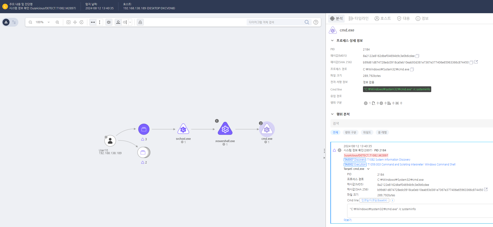

T1059.003.01 windows command shell
D3FEND
MITRE ATT&CK 액션을 기준으로 대응 방안을 작성
Detection
systeminfo 프로세스의 실행을 탐지한다.
Detection(EDR)

Response
Windows Command Shell의 특정 명령어와 스크립트 실행을 제한하거나 금지하는 그룹 정책 설정을 적용한다.
Mitigations
CMD 실행 제한 및 권한 관리 (M1038 - Execution Prevention)
- CMD.exe 실행을 제어하고, 관리자 권한이 필요한 프로세스에서만 CMD 실행 가능하도록 제한
- AppLocker 또는 WDAC(Windows Defender Application Control)를 사용하여 CMD 실행을 화이트리스트 기반으로 제한
- CMD를 통한 원격 명령 실행을 비활성화하여 공격자가 원격에서 CMD를 실행할 수 없도록 설정
스크립트 실행 정책 및 제어 (M1038 - Execution Prevention)
- 스크립트 실행 정책을 설정하여 스크립트 및 배치 파일(.bat, .cmd 등)의 실행을 제한
- 스크립트 블록 로깅을 활성화하여 CMD를 통해 실행된 명령 및 스크립트를 추적
- 스크립트 실행에 대한 사용자 권한을 제한하고, 서명되지 않은 스크립트의 실행을 차단
PowerShell 및 CMD 명령어 실행 모니터링 (M1047 - System Logging & Monitoring)
- Sysmon(Event ID 1)을 활용하여 CMD 명령어 실행을 모니터링하고, 의심스러운 명령어 실행을 추적
- Windows 이벤트 로그를 통해 CMD에서 실행된 명령어 및 스크립트를 기록하고, 비정상적인 실행 패턴을 분석
- EDR/XDR 솔루션을 사용하여 CMD 및 배치 파일 실행을 실시간으로 감지하고 악성 명령어를 탐지
고급 명령어 및 악성 활동 탐지 (M1040 - Behavior-Based Detection)
- CMD 명령어를 통해 시스템에 비정상적인 명령이 실행되는 경우 탐지 및 경고 시스템을 활성화
- 네트워크 접속, 프로세스 생성, 시스템 설정 변경과 같은 악성 활동을 탐지하는 규칙 설정
- 의심스러운 배치 파일, 명령어 인젝션, 권한 상승을 탐지하는 데 중점을 둔 탐지 메커니즘 설정
배치 파일 및 스크립트 서명 및 검증 (M1043 - Code Signing)
- 배치 파일 및 CMD 스크립트의 서명 검증을 활성화하여 서명되지 않은 파일의 실행을 차단
- 스크립트 파일에 대한 디지털 서명을 강제하고, 서명되지 않은 스크립트의 실행을 차단
- 배치 파일 및 스크립트의 무결성 검사를 통해 악성 코드 삽입을 방지
사용자 계정 및 권한 관리 (M1018 - User Account Management)
- 관리자 권한을 가진 계정의 CMD 사용을 제한하고, 최소 권한 원칙을 적용하여 사용자 계정의 권한을 최소화
- 관리자 계정에 대한 제어를 강화하고, CMD를 통해 시스템 변경을 할 수 없도록 제한
- 사용자 계정 관리를 통해 비관리자 계정이 CMD 명령어를 실행할 수 없도록 설정
네트워크 및 파일 시스템 접근 제어 (M1047 - System Logging & Monitoring)
- CMD를 통한 네트워크 요청이나 파일 시스템 수정을 추적하여 비정상적인 접근을 감지
- 파일 시스템 및 네트워크 로그를 활용하여 CMD를 통해 실행된 파일 및 네트워크 연결을 분석하고 탐지
- 네트워크 요청 및 시스템 설정 변경이 의도된 활동인지 여부를 모니터링
Affected Techniques
Action 실행시 함께 영향을 받는 다른 Techniqes
| D3FEND |
| D3-PM Platform Monitoring |
| D3-PLA Process Lineage Analysis |
| D3-PCA Process Code Segment Verification |